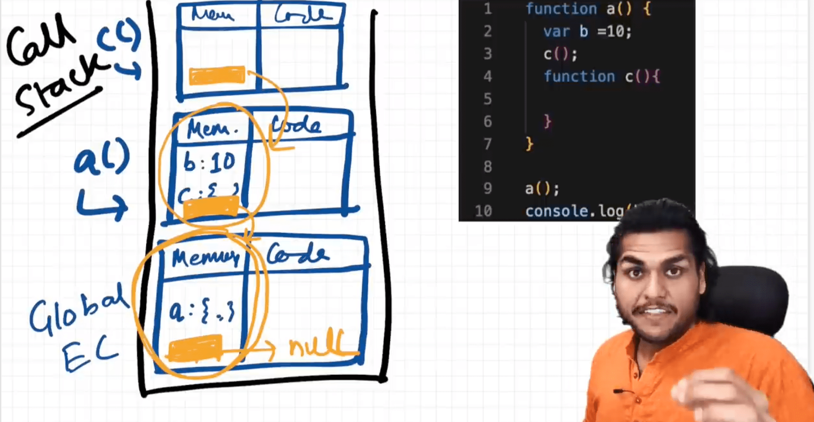
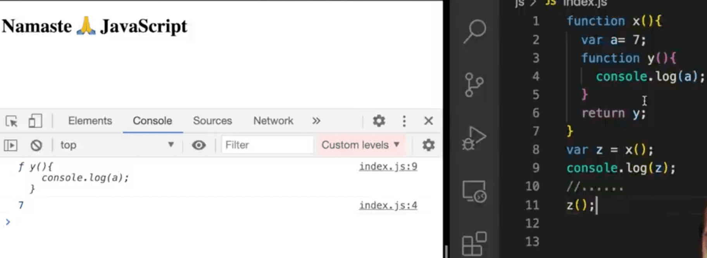
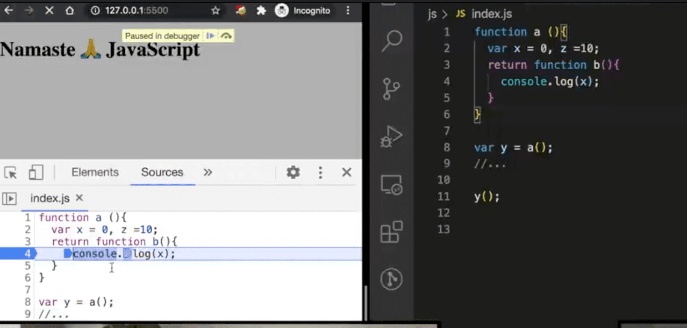

Everthing inside JS happens inside an Execution Context -
EXecContext is like a big box it has two components 1- Memory this is the place where variables and functions stored, 2- code -> code execute one line at a time
JS is a synchronous sigle-threaded language
var x = 7;
function getName() ❴
console.log("welcome JS");
❵
getName();
console.log(x);
console.log(getName);
Welcome JS
7
we move function invocation to top of the file
getName();
console.log(x);
var x = 7;
function getName() ❴
console.log("welcome JS");
❵
welcome JS
undefined
Even before code start execution memeory is allocated for all variables and functions
this because when JS execute code it create execution context and intilize the variable and function variable value as undefined and for function copy code so that function it bwill print out put but for x it showing undefined.
suppose i remove line var x = 7 -> now the result will be
welcome JS
Uncought ReferenceError: x is not defined
Same thing here intialls when JS executes it will read all line first there there is no value x and it will not be initlized in memeory in second time when it comes to execution phase it will show error if it read for first time it will show as undefined since it is in memory.
console.log(getName);
function getName() ❴
console.log("welcome JS");
❵
what will be the output? -> it prints the function lines since it is there in memory.
we can check by break point in first line-> check in callstack -> there x and all functions
we can also see the call stack tree by puting breakpoint.
D/B not defined-> decleartion not here in code and undefined -> declearation is below the initlization
suppose we change that in to arrow function
console.log(getName);
var getName = () => ❴
console.log("welcome JS");
❵
output will be
Uncaught TypeError: getName is not a function
This will be considered as variable and initial value will be un defined so it say s not a function
console.log(getName);
function getName() ❴
console.log("welcome JS");
❵
if you write in this syntax it will copy the code lines and print func
there is another way to declare function
console.log(getName);
var getName() = function () ❴
console.log("welcome JS");
❵
this will also whows undefined no function since its considered as variable
call stack tree can seen in console debugging under source
when the control comes to new function initlization it will create execution context and pushed into stack tree and once function exection completed it moved out from stack tree
No code empty file is the shortest program in JS
when we have a empty file and when we execute that file JS engine create global execution context along with window object and this
this points window (this === window) when nwe type in console it will print true, when we type window in console we can see window object, same as type this press enter we can see window object
anything which is not inside function is global space eg
var a =10;
function b() ❴
var x =10;
❵
Here a, func b is in global spacebut x is not in global space it's inside the function
when we see that in console type window we see window object expand that we can see a:10, b: fb() but not x
we can acess the window object by console.log(window.a); we get value as 10
we can put like this also console.log(a); it will assume as window object(global object) and take from there
if we give console.log(this.a) output will be same 10, window, this all refers same in memeory space
console.log(a);
var a= 7;
console.log(x);
when we put break point in first line type console with a it will give undefined but for x it will show as not defined
while passing the dbugger we can type in console to get that particlar state values.
undefined -> JS engine allocate placeholder for a
not defined which is not allocated memeory
JS is a looseley type language -> if we asign a= 1 later we can assign a as string .. but in othe lange like c we can assign string it only hold string and it will not hold number etc... strict type
var a;
console.log(a);
a=10;
console.log(a);
a="hello...";
console.log(a);
out put will be
undefined
10
hello...
we should not give a = undefined; not a good practice
scope is directly dependent on the lexical environment
function a() ❴
console.log(b);
❵
var b =10;
a();
when it reaches log b it try to find out weather b exist in local memeory space or not ie, a 's local memeory context it wont be there
the out put is 10
function a() ❴
function c() ❴
console.log(b);
❵
❵
var b = 10;
a();
output also 10
function a() ❴
var b = 10;
c();
function c() ❴
console.log(b);
❵
❵
a();
console.log(b);
this will show b as not defined
what is the scope of variable b => where can i acess the variable b
Is b inside the scope of func c ? => can i acess b inside c
where ever the exection context is created , a lexical environment is also created
lexical environment is the local memeory along with the lexical environment of its parent.
lexical means -> in term herarchy or in sequence
you can say c function is lexicaly sitting inside a function. => in order or in herarchy
Where the code is present physicaly
Global level reference to outer level point to null has no parent
it will check if b present in local memenry of c it wont find then goes to the lexical enviromemt of its parent a it find out b over there then print b
if supose not there in a it will look for global lexical envionment if thre also not found it move to it's parent that is null so it will print as not defined.'
If JS engine does not find anything in local memeory it goes next level of scope chain there also it not find find anything it goes to next level ... this way of finding is called scope chain..
Here what is the lexical enviroment of a -> local + lexical env of a is global
Yes Let & const declarations hoisted these are in temporal dead zone in the time being
console.log(b);
let a = 10;
var b = 100;
memeory is allocated for this function when a single line is executed.we get b value as undefined because of hoisting
when we try to get a value in console we get error as Reference error - cannot acess a before initialization
memeory was assined to var (b) and attached to global object but in case of let and const they are also allocated memeory thtat is called hoisting but they are stored in different memeory space thatn global called script, we cannot acess let and const decleartion before puting some value in them
Temporal Dead Zone -> It is the time since the let variable was hoisted and till it initlize some value, time between that is called Temporal Dead Zone
Time b/w the let variable is hoisted and value initilzed to it(let a= 10) is called Temporal dead zone
When our we try to acess variable inside the temporal dead zone it gives you a reference error.
value of b is attached to window/ global object we can check this by chrome console and type (window.b or this.b) it will give value as 100
let a = 10;
let a = 15;
let is title more strict than var no duplicate decleration it shows error as SyntaxError - Identifier a has already been declared
let a = 10;
var a = 100;
it will show error as SyntaxError - Identifier a has already been declared, we cannot use same name in the same scope again
var b = 100;
var b = 20;
but in case of var it is valid to redeclare it will not show error
const is more stric than let
let a;
const b = 100;
a=10;
console.log(a);
We cannot do this initlization for const and later assign value for const , we need to give as const b = 50; initlize in the same line this is strict
const b;
b = 70;
we get syntax error Missing initilizer in const declaration
const b = 50;
b = 40;
It will show error as TypeError: Assignment to const variable.- because it was const type we are not able to re assign
TypeError => const b = 20; b=10
SyntaxError => const b;, let a= 10; let a = 15;
ReferenceError => when JS engine try to find the specific variable inside memeory space and you cannot acess it console.log(a); let a = 50;
Not defined error try to acess not defined variable console.log(y);
what should wee use let const var - const 1st place when ever you want to put some vale which will not change later, 2nd use let whre ever possiple
Always use decleration and initilization on top is the best way
we know let & const are Block Scoped what is block in JS?
❴
❵
block is aslso know as compound statement
Block scope -> what are the functions and variables acessed in side this block

var a = 100;
❴
var a = 10;
❵
console.log(a);
here value will be 10 not 100
Function along with lexical scope bundled together forms a closure
function return another function in JS
function x() ❴
var a=7;
function y() ❴
console.log(a);
❵
return y;
❵
var z = x();
console.log(z);
it returns the whole function y not only code along with it lexical scope

function x() ❴
var i = 1;
setTimeout(function () ❴
console.log(i);
❵, 3000);
console.log('Welcome JS');
❵
x();
this function remembers reference to i it forms closure
Here setTimeout do is it takes the callback function and store it in some place and attach timer 3000 millisecond to it and it procides futher code means here console... and once the timer expires it takes back the function and put again to call stack and runs it thats how setTimeout works.
JS does not wait there for that 3000 milli seconds
welcome JS
1
I need to write a JS program to print 1 after 1 sec ,2 after 2 sec,3 after 3 sec ... still 5 how would you do that?
function x() ❴
for(var i=1; i<=5; i++) ❴
setTimeout(function () ❴
console.log(i);
❵, i * 1000);
❵
console.log('Welcome JS');
❵
x();
i value will be 1,2,3.. 5 it print welcome JS and 1, 2, 3.. 5 for time and for delay we multiply i with 1000 milisec ie 1 sec
but it desnot behave in that way it behaves differently it prints 6 for 5 times
this working like this due to closures => closure is a function along with lexical environment even a function is taken out from it's orginal scope if tit execute in other scope still it rembers its lexical enviroment when set timeout takes the func and store some whwre and attach timer so that function remebers the i (it rember the reference to i not value of i)
when the loop runs it makes copy of func attach timer and also remember the reference of i similerly this 5 copy of the function all pointing to same referenve of i
Since Var i is pointing to global object (console.log(i) this i is pointing to same memory location )these 5 copy point to same i refrence, when JS engine runs the program it will set 5 copy along with timer attached and it moves on .. and when timer expires the value of i will be 6 because the loop was continuesly running so that only it print 6 for 5 times (5 copy refers same memery reference variable i)
To fix this use let since let has block scope for every iteration i will be new variable new copy (this function forms new closure)
function x() ❴
for(let i=1; i<=5; i++) ❴
setTimeout(function () ❴
console.log(i);
❵, i * 1000);
❵
console.log('Welcome JS');
❵
x();
when we do i++ here i = 2 is a new copy of variable which forms a closure with setTimeout function , setTime takes new copy of i bounded to it and saves it next i = 3 .. new one keeps on doing it ..
Each time setTimeout is called it refereing to different memeory location seperate copy of i which were in the scope.
Why it not worked with var but worked with let is because let block scoped it creates new copy every time when loop is executed.
Some of the smart interviver tell that we can't use let use var then what will you do? that time Clousers will help you
function x() ❴
for(var i=1; i<=5; i++) ❴
function close(x) ❴
setTimeout(function () ❴
console.log(x);
❵, x * 1000);
❵
close(i)
❵
console.log('Welcome JS');
❵
x();
every time setTimeout we call close of i it will create new copy of i itself over here
Iinterview: Can you pls let me know what is closure in JS?
Candidate: A function along with reference with it's outer environment together forms a closure in other words closure is a compination of function and its lexical scope buldled together forms a closure
I: Can you explain little bitbmore about it?
C: each function JS has it acess to outer lexlical environment it's like acess to variable and functions present in parent, when a function executed in some other scope not in orginal scope still remeber outer enviroment variables and func that is what closure is.
I: can you give tittle example what you said
function outer() ❴
var a = 10;
function inner() ❴
console.log(a);
❵
❵
C: yes definitely give an example let me share my screen is it visible? Suppose we have a nested function lets call it as outer inside we we have a function as inner actualy in JS inner function has acess to outer func if i create a variable in outer enevironment lets call it a = 10 , so this inner fun has acess to a variable some we can do console this inner func along with its lexlical outer environment is called closure
function outer() ❴
var a = 10;
function inner() ❴
console.log(a);
❵
return inner;
❵
outer()();
C: main part of closure is if i returns inner fun outside from this fun and try to acess outside the func it still remeber what the value of a if i do Outer()(); it will print 10
I: what did you do with 2 parathesis in line no 8?
C: this paranthesis is like calling the inner function if i have to modify this i can do something like this
var close = outer(); close()
I: what would if i move var a = 10 before return then what is result?
function outer() ❴
function inner() ❴
console.log(a);
❵
var a = 10;
return inner;
❵
var close = outer();
close()
C: no no still it will form a closure it will work in the same way
I: what if i change var to let in line no 6 will it make a difference?
C: when we cange let a variable have has block scope we cannot acess let a outside but still it works in same way
I: if an argument is passed to outer function how will it behave?
function outer(b) ❴
function inner() ❴
console.log(a, b);
❵
var a = 10;
return inner;
❵
var close = outer('hello');
close()
C: it behave in same way it will print=> 10, "Hello"
I: I have one more question here,if a function nested with another function can we have a example for that
function outest() ❴
var c = 20;
function outer(b) ❴
function inner() ❴
console.log(a, b, c);
❵
var a = 10;
return inner;
❵
return outer
❵
var close = outest()("hello");
close()
variable c still form closure with outer function
I: if we have conflicting variable let a=10 outside the func wht will happen?
function outest() ❴
var c = 20;
function outer(b) ❴
function inner() ❴
console.log(a, b, c);
❵
let a = 10;
return inner;
❵
return outer
❵
let a = 20;
var close = outest()("hello");
close()
it will print 10 as output if first line is not there it will take global outside it will take as 20 if that line also not there it will print as undefined.
I: Can you now tell me few advantage of closures?
C: it used in function currying, in higher order func , one more important it helps in data hiding and encapsulation
I: can you tell little bit more about data hiding and encapsulation
C: privacy other func cannot acess that
I: can you just give me a example of that
var couter = 0;
function incrementCounter() ❴
counter++;
❵
C: couter example we have a function increment the flow is anybody in the code can acess the couter variable and change it here comes data hiding in to picture
function counter() ❴
var cout = 0;
function incrementCounter() ❴
count++;
❵
❵
console.log(count);
if somebody try to acess the cout from outside it cannot do show error.
function counter() ❴
var cout = 0;
return function incrementCounter() ❴
count++;
console.log(count);
❵
❵
var counter1 = counter()
counter1()
when we return a func it form a closure and returns, counter1 calls counter it give acess to this incrementCounter function and this func has closure with count = 0 variable, so increment counter function will come under counter1 it will increment counter
major advantage is cont is hidden kind of private variable
Yes got it what you trying to say.
when we make another counter it will be fresh counter it wont tuch the scope here
function counter() ❴
var cout = 0;
return function incrementCounter() ❴
count++;
console.log(count);
❵
❵
var counter1 = counter()
counter1();
var counter2 = counter();
I: Is thia good way to make a counter? is you code like sclable? supose you have to create decrement counter also how will you go and add that
May be we can use constructor function and have seperate function for increment and decrement function should i show you in the code?
function Counter() ❴
var count = 0;
this.incrementCounter = function () ❴
count++;
console.log(count);
❵
this.decrementCounter = function () ❴
count--;
console.log(count);
❵
❵
var counter1 = new Counter();
counter1.incrementCounter();
Since it is a constructor func we need to create new keyword here good naming convestion is to use capital letter C
I: can you tell me the dis advantages of closure
C:yes closure comes with disadvantage also there could be over consumption of memeory in closures those closed over variables are not garbage collected if not handled propery it can lead to memeory leaks, due to memory accumulation it can freze the browser
I: what is the grpage collector what it will do?
C: Garpage collector is like a program in browser or in the JS engine which frees up and utlize the memory JS is basically a highlevel programing language in programing languages like c and c++ we developer how we allocate memory and delocate memory is up to developers in highlevel programin language like JS most of the work done by JS engine there is a grbage collector in JS that garpage collector when ever there is some unused variables it frees out the memeory when ever this variables are no longer needed that is what garpage collector does.
I: what are the relatin b/w grapage coloector and closure
function a() ❴
var x = 0;
return function b () ❴
console.log(x);
❵
❵
var y = a();
y();
C: we have a function a and have a variable x =0; we have another function b if we try to use varable x inside function b if we return function b , now the func b forms closure with variable x if we call a function once the function executed it need to clear the x from memeory it no longer needed but here xi refered by b function this x cannot be freed up., var y has the return function of b and b has the clouse of x variable that means x memeory cannot be freed because we later some where we use y function, but some of moder browers v8 have smart garpage collector some how find this variables are not reachable collect that variables
I: what is this smartly collected garpage means what smart?
C: lets assume one more variable z and z is not been used when b function is returned z is garbage collected smartly and x is not though x and z forms Clousers
C: when put break point and try to type in console log of x it give as 0 but for z it will say z is not defined zi sno longer in memery it is garpage collected
Function arae heart of JS
function a() ❴
console.log('a called');
❵
a();
Function act like a value
var b = function () ❴
console.log('b called');
❵
b();
D/B func expression and statement is hoeisting.
a();
b();
function a() ❴
console.log('a called');
❵
var b = function () ❴
console.log('b called');
❵
Iam calling function before creating it Here during the hoeisting/ memeory creation phase a is created memeory and this function is assigned to a, but in case of b it is treated like a variable it is assigned undefined intially untill the code hits line itself then only function is asigned to variable b
Function statement and declaration both are same.
Func without name is called anonyms func
function () ❴
❵
Anonymus func are used when a function are used as values (var b = function() ...)
function statement we cannot use anonyms func
Function expression with named func is called named function expression
var b = function xyz () ❴
console.log('b called');
❵
b();
if we call xzy() seperately it will show error xyz is not defined
this xyz is created as local variable but created in outerscope (wheb function b() is called it create a variable undefined if we print funct xyz it will print inside console it will print but can acess since it it not created in outer scope.)
var b = function xyz () ❴
console.log(xyz);
❵
b();
xyz();
function arguments b(1, 2) the values which we passed inside function is called arguments
function (param1, param2) this function perameters - labele wich get those vales are called paramenters
We can pass one function in to another function as argument , we can get in function b and print that in console
var b = function (param1) ❴
console.log(param1);
❵
b(function () ❴
❵ );
there is another way
var b = function (param1) ❴
console.log(param1);
❵
function xyz () ❴
❵
b(xyz);
When we call a function we can return annonums function., if it is named function also we can return that too (return function xyz () ❴)
var b = function (param1) ❴
return function() ❴
❵
❵
console.log(b());
The ability to use function as values, function passed as argument, return func from another function this ability is knowns as first class functions in JS
First class citizen/ first class function - both are same.
when these function calls with const let behaves in same way
arrow func introduced in ES6
When we pass a func in to another funct => the func we pass to another func is clalled callback func
it can do one thing at a time in a specific order.but using callback we can do async things in JS
setTimeout(function() ❴
console.log("timer");
❵, 5000);
function x(y) ❴
console.log("x");
y();
❵
x(function y() ❴
console.log("y");
❵);
SetTimeout will take this function and store it in seperate place and it will attach a time 5000 millisecs, JS won't wait for setTimeout for finish over there Callback func gives power os asncynerety it doesnot wait here for 5000 milli sec, also we are passing func to be done after 5000 mill sec callback func
It will see the function definition of x and try to call x function, it will pass y callback function in to y (func x (y)) it execute x console.log(x), we call y(); it print x, y and gooes on... when 5000 mili sec expires this callback fun executed and print timer => out put will be x, y ,after 5 sec timer
All operation run in one clall stack main to check we can put breakpoint and check the order of execution..
Any operation block this call stack that is known as blocking the main thread
If Js does not have first class function, function callback we could not do async operations.
document.getElementById("clickMe").addEventListener("click", function xyz () ❴
console.log('event clicked');
❵)
JS will get the ID and call event litener click in that time the function which is passed in click is the callback function, this callback func is stored some where and that automatically comes into our callstack
suppose we have to know how many times the btn clicked we have to print that.
let count = 0;
document.getElementById("clickMe").addEventListener("click", function xyz () ❴
console.log('event clicked', ++count);
❵)